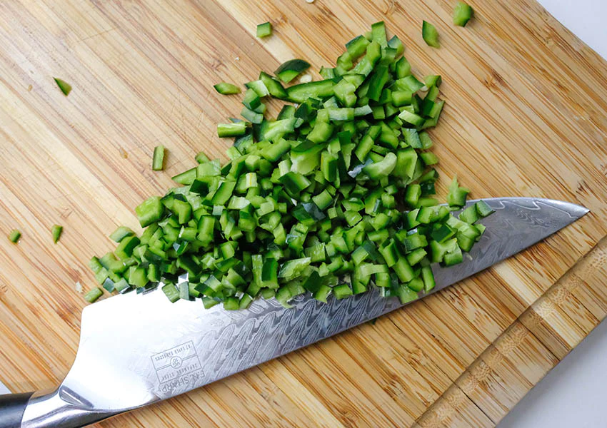

Chili Verde
My Ultimate Comfort Food
Ingredients
- Pork, 1 inch cubes
- Canned diced tomatoes
- Canned chopped green chilis, hot
- Garlic, minced
- Chicken stock
- Onion, diced
- Flour
- Onion Powder
- Garlic Powder
- Salt
- High smoke point oil
Instructions
- Cover bottom of a cast iron skillet with oil and set to medium high heat. While heating, combine flour, salt, onion powder, and garlic powder
in a bowl and coat pork with mixture.
- Once oil is hot, arrange pork in a single layer and fry till brown. Use tongs to turn pieces and get as much Maillard reaction as possible on all
sides. Do not overcrowd pan, work in multiple batches if necessary.
- Set pork aside, drain off excessive oil from pan, and use remainder to sweat onions with a few pinches of salt. Add garlic after a few minutes.
- Combine stock, tomatoes, chilis, pork, onion, and garlic in a pot and cook until pork is tender. Salt to taste.
- Serve with fresh tortillas or rice.
- Garnish with cilantro, cheese, sour cream, and green onion. If desired
This recipe is my favorite because it is my ultimate reminder of home. My mom is an amazing cook, but something about this meal always set it apart.
She never uses hard measurements for these kinds of dishes so I don't really either, but, if needed, sites such as
Allrecipes have many more rigid recipes to serve
as a guideline. There are many variations (the above is a very straight-forward version), so look through many of them to get inspiration to craft the perfect version for you.
